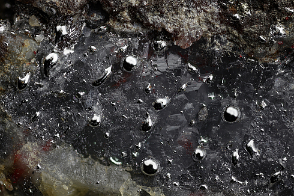

Mercury
Mercury is officially classed as a mineral species for historical reasons, and also because it is distinctive in its chemical and physical properties. However, because it occurs as a liquid, it does not satisfy the normal criteria to be a valid mineral. It crystallizes at -40 degrees celsius, at which point it forms rhombohedral crystals.